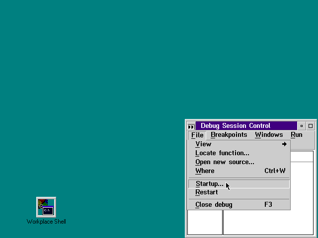
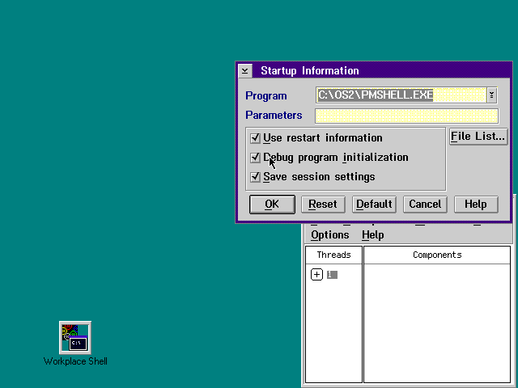
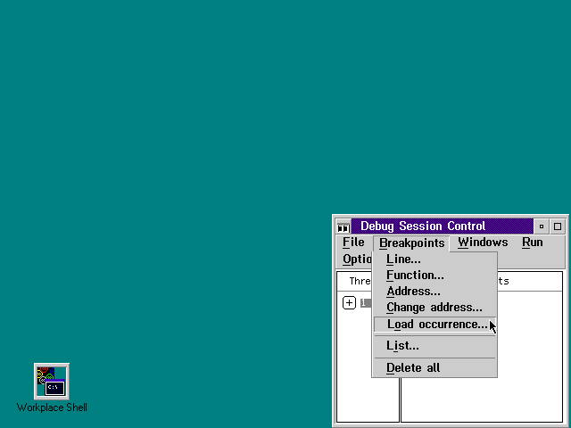
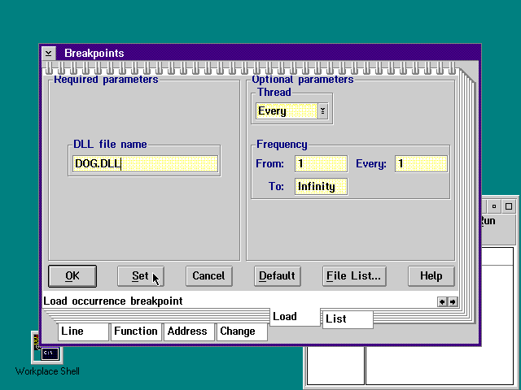
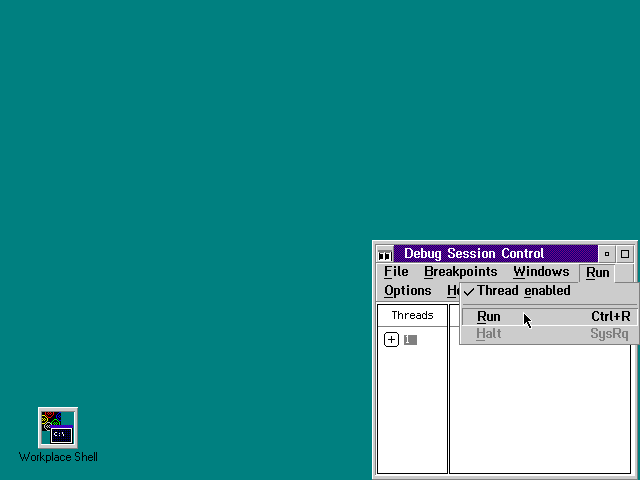

<HTML>
<HEAD>
<META HTTP-EQUIV="CONTENT-TYPE" CONTENT="TEXT/HTML; CHARSET=UTF-8">
<TITLE>Debugging with IPMD</TITLE>
</HEAD>
<BODY>
<H1>Debugging with IPMD</H1><!-- entering slot 91 -->
<P>
The <A HREF="083_L3_StartingandRestartin.html">Starting and Restarting the
Workplace Shell</A> technique can also be used when a source level debugger
is needed. Follow the same steps as outlined in that section, but instead
of simply invoking PMSHELL, invoke the debugger, as follows:
<PRE>   IPMD PMSHELL
</PRE>

<P>
The debugger initializes, but the Workplace Shell does not start running.
The steps to be followed are:<!-- lm: 0x2 2 -->
<UL>
<P>
 <LI><LI><!-- lm: 0x2 6 -->Select the<B> Startup</B> option from the<B> File
</B>pull-down menu, as shown in the following figure:<!-- Unable to decode bitmap format -->
<P>
<!-- lm: 0x2 2 -->
<P>
 <LI><LI><!-- lm: 0x2 6 -->Select the Debug program initialization option,
as shown in the following figure:<!-- Unable to decode bitmap format -->
<P>
<!-- lm: 0x2 2 -->
<P>
 <LI><LI><!-- lm: 0x2 6 -->Select the<B> Load Occurence</B> option from
the<B> Breakpoints</B> pull-down menu, as shown in the following figure:
<!-- Unable to decode bitmap format -->
<P>
<!-- lm: 0x2 2 -->
<P>
 <LI><LI><!-- lm: 0x2 6 -->Enter a breakpoint by specifying the name (but
not the path) of the DLL, for example, DOG.DLL. Then, select the Set push
button, as shown in the following figure:<!-- Unable to decode bitmap format -->
<P>
<!-- lm: 0x2 2 -->
<P>
 <LI><LI><!-- lm: 0x2 6 -->Set any other breakpoints you wish at this time.
Select the OK push button when finished.<!-- lm: 0x2 2 -->
<P>
 <LI><LI><!-- lm: 0x2 6 -->Select the<B> Run</B> option from the<B> Breakpoints
</B>pull-down menu, as shown in the following figure:<!-- Unable to decode bitmap format --><!-- lm: 0x2 1 -->
</UL>
<P>
The Workplace Shell will then initialize (very slowly) and the debugger
will stop when one of the specified breakpoints is reached.
<P>
Debugging a Workplace Shell application using IPMD will be much the same
as debugging a PM application. Remember that if you manually enter the name
of a class or instance variable into IPMD, you must prefix the name with
<I>somThis</I> instead of using the underscore ( _ ) macro. In the sample
code fragment illustrated in the following figure, to manipulate the<I> _hIcon
</I>variable in IPMD, use<I> somThishIcon</I> instead of<I> _hIcon</I> (selecting
<I>_hIcon</I> with the mouse works as expected).
<PRE>/****************************************************//*  Method: wpclsInitData                           */
/*                                                  */
/*  This sample shows how to initialize class data  */
/ *  associated with MyDataBase.                    */
/****************************************************/

SOM_Scope void SOMLINK MyDataBaseM_wpclsInitData(M_MyDataBase *somSelf)
{
  /* M_MyDataBaseData *somThis = M_MyDataBaseGetData(somSelf); */
  M_MyDataBaseMethodDebug("M_MyDataBase","MyDataBaseM_wpclsInitData");

  hModule = _clsQueryModuleHandle(somSelf);

  _hIcon = WinLoadPointer(HWND_DESKTOP, hModule, ID_WINDOW);

  parent_wpclsInitData(somSelf);
}

</PRE>


<P><HR>

<A HREF="084_L3_DebuggingwiththeKern.html">[Back: Debugging with the Kernel Debugger]</A> <BR>
<A HREF="086_L1_ObjectAidHelpMethods.html">[Next: Object Aid: Help Methods]</A> 
</BODY>
</HTML>
